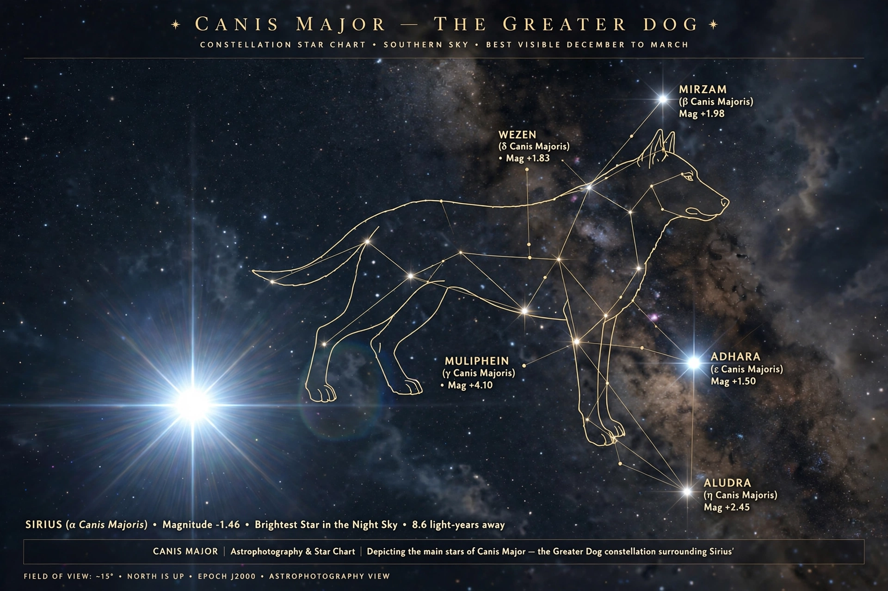

Canis Major is a constellation in the southern celestial hemisphere. In the second century it was included in Ptolemy's 48 constellations and remains one of the 88 modern constellations. Its name is Latin for "greater dog", and it is commonly represented as one of the dogs following the hunter Orion (the other being Canis Minor, the "lesser dog"). Canis Major contains Sirius, the brightest star in the night sky.
 | |
| Abbreviation | CMa |
|---|---|
| Genitive | Canis Majoris |
| Symbolism | The Greater Dog |
| Brightest star | Sirius (α CMa), magnitude −1.46 |
| Area | 380 sq. deg. (43rd) |
Sirius (α Canis Majoris), the "Dog Star", is a binary system 8.6 light-years away; its heliacal rising marked the Egyptian New Year and the flooding of the Nile, and the "dog days" of summer take their name from it. Other bright stars include Adhara (ε), Wezen (δ), Mirzam (β) and Aludra (η). The red hypergiant VY Canis Majoris is among the largest stars known, though the even larger UY Scuti lies in Scutum.
The constellation hosts the open cluster Messier 41, known since antiquity, and the colliding spiral galaxies NGC 2207 and IC 2163. The Canis Major Dwarf Galaxy, identified in 2003 at about 25,000 light-years, is one of the Milky Way's nearest satellite galaxies — though some astronomers argue it is an overdensity of the galactic disc rather than a separate galaxy.
In Greek myth the dog variously represented Laelaps, the hound that never failed to catch its quarry, or one of Orion's hunting dogs. The constellation's stars were also significant in Mesopotamian, Egyptian and Polynesian sky lore.
From Wikipedia, the free encyclopedia.